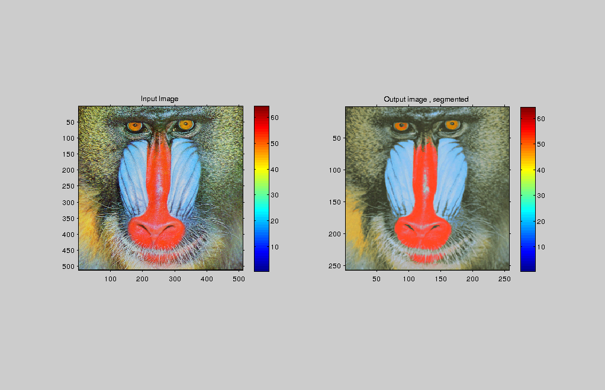

Contents
MyMainScript
tic;
Processing baboonColor.png
im= imread('../data/baboonColor.png');
hr = [ 5 8 ];
[x y]=size(im);
for i=1:2
disp(['Value of hr (Note: I have varied hr and hs and threshold is hold constant Have done this so to show the difference, in the image for different hr,hs value) =' num2str(hr(i))]);
[out] = myMeanShiftSegmentation( im, 40, hr(i), 3 );
iptsetpref('ImshowAxesVisible','on');
figure('units','normalized','outerposition',[0 0 1 1])
subplot(1,2,1);
imshow(mat2gray(im)), colorbar;
title('Input Image')
subplot(1,2,2);
imshow(mat2gray(out)), colorbar;
title(' Output image , segmented ');
name = strcat(['../images/outputForHR' num2str(hr(i)) '.']);
file_name = strcat([name 'png'])
imwrite(mat2gray(out),file_name);
end
toc;
Value of hr (Note: I have varied hr and hs and threshold is hold constant Have done this so to show the difference, in the image for different hr,hs value) =5
Value of hs =40
Value of hr =5
Value of threshold (Note : This will control number of iteration) =3
file_name =
../images/outputForHR5.png
Value of hr (Note: I have varied hr and hs and threshold is hold constant Have done this so to show the difference, in the image for different hr,hs value) =8
Value of hs =40
Value of hr =8
Value of threshold (Note : This will control number of iteration) =3
file_name =
../images/outputForHR8.png
Elapsed time is 156.718173 seconds.
